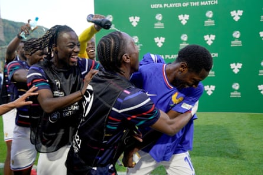
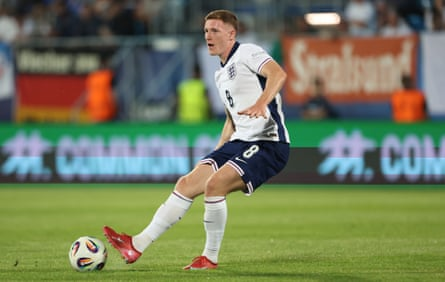

Nick Woltemade, Germany
Nick Woltemade enjoyed a solid season for VfB Stuttgart in the Bundesliga, scoring 12 times and providing two assists. He really came alive in the DFB-Pokal; Stuttgart won the cup and he finished as top scorer. Having made his senior debut for Germany against Portugal in their Nations League semi-final earlier this summer, Woltemade has been outstanding at the Under-21 Euros in Slovakia. The 23-year-old leads the way for both goals (six) and assists (three) at the competition. Already a wanted man, Woltemade’s stock is on the rise this summer – and will soar if Germany win the tournament on Saturday and he collects the Golden Boot.
Harvey Elliott, England
Only Woltemade has scored more goals than Harvey Elliott (four), who hit a decisive double in England’s 2-1 win over the Netherlands in the semi-finals. While he is a doubt for Saturday’s final, owing to a knee knock sustained while celebrating his winning goal, Elliott’s performances at the tournament have given supporters and interested clubs a timely reminder of his quality. Minutes at Anfield may prove hard to come by next season following the arrival of Florian Wirtz from Bayer Leverkusen, but a match-winning display against Germany this weekend would do the 22-year-old’s reputation the world of good.
Djaoui Cissé, France
France were well beaten by Germany in the semi-finals, losing 3-0, but Djaoui Cissé has still earned a legion of admirers at the tournament. A solid performer for Rennes last season, Cissé played a pivotal role in taking France to the last four. The midfielder scored three goals, including an important strike in the quarter-final against Denmark. The 21-year-old’s ability to work his way out of tight situations in the middle of the park is impressive.
Djaoui Cissé is mobbed by teammates after he wins man of the match.Photograph: Piermarco Tacca/Uefa/Getty Images
Geovany Quenda, Portugal
Chelsea fans watching Geovany Quenda at the tournament will not have been disappointed by the 18-year-old winger. Quenda signed for Chelsea earlier this year and will join the club next summer after another year developing with Sporting CP in Lisbon. Portugal exited the tournament at the quarter-final stage, losing to the Netherlands, but Quenda shone throughout. Only Woltemade (nine) has been directly involved in more goals then Quenda (five) at the tournament; and the German (five) is the only player to have created more big chances than the Portuguese winger (three).
William Osula, Denmark
William Osula struggled for regular minutes at Newcastle last season – he was behind Alexander Isak and Callum Wilson in the pecking order after all – but he has made his opportunities count at the Under-21 Euros. The 21-year-old scored three goals and provided two assists in four games for Denmark before they were beaten by France in the quarter-finals. Osula must be hoping his performances in Slovakia have gone some way to convincing Eddie Howe that he warrants a more prominent role in the Newcastle setup next season.
Lucien Agoumé, France
Lucien Agoumé is one of football’s better-travelled young players. He was born in Cameroon, grew up in France, played for Inter in Italy and is now at Sevilla in Spain. Having impressed for Sevilla last season, even while they struggled in La Liga, his showings for France will have caught the eye of clubs looking to sign a central midfielder this summer. The 23-year-old showcased his ability to both win and recycle possession. He has a bright future.
Samuel Soares, Portugal
Samuel Soares proved an excellent last line of defence for Portugal, though it wasn’t enough to take his country beyond the quarter-finals. The Benfica goalkeeper did not concede a single goal in the group stage. In fact, he only conceded once in the tournament, in Portugal’s 1-0 defeat to the Netherlands in the quarter-finals. The 23-year-old kept more clean sheets (three) than any other goalkeeper, and ranked 10th for saves per game (2.8) as he excelled for Rui Jorge’s team.
Elliot Anderson, England
While Harvey Elliott has been receiving most of the plaudits, Elliot Anderson’s performances at the base of the England midfield should not go unnoticed. The 22-year-old’s form for Nottingham Forest earned him a place in Lee Carsley’s team and he hasn’t let the England manager down. The former Newcastle man ranks 20th for passes per game (54.6), with a respectable pass success rate of 91%. Anderson also has one goal and one assist to his name, with his tally of three big chances created also a fine haul.
Elliot Anderson has kept the ball well for England.Photograph: Nikola Krstic/Shutterstock
Rocco Reitz, Germany
Woltemade may be the one hogging the limelight for Germany, but Rocco Reitz’s outings in the middle of the park also warrant praise. The midfielder has become a key man for Borussia Mönchengladbach in recent seasons and he has maintained that solid form for Germany. The 23-year-old has registered two assists – and his tallies of three big chances created and two key passes per game rank highly.
Diogo Nascimento, Portugal
Portugal’s tempo setter, Diogo Nascimento, made 92.3 passes per game – the highest at the tournament – and did so with a fine pass success rate of 94%. The 22-year-old also averaged 3.3 accurate long balls per game, showing off his ability to pick out teammates from range. Having left Benfica for Vizela in 2023, Nascimento was influential as the club finished third in the second tier last season. His standout displays for Portugal should propel the diminutive midfielder into the spotlight.
This is an article by WhoScored .